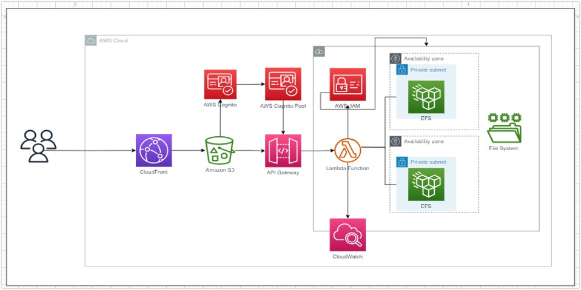
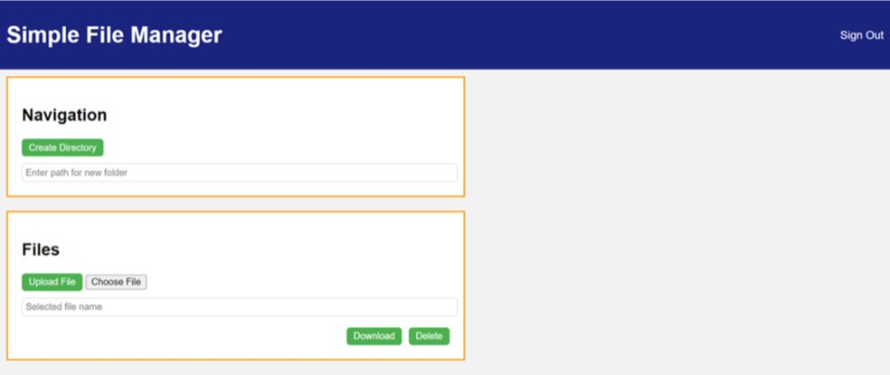
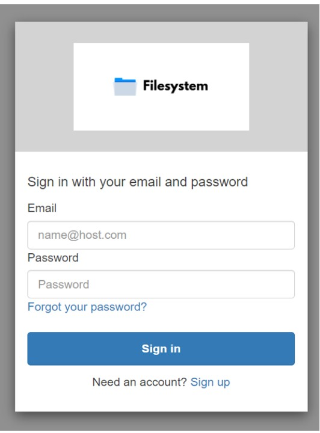
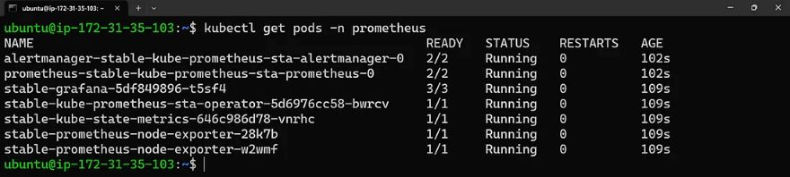
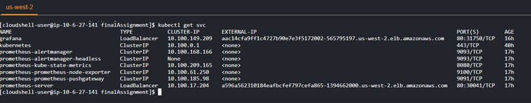
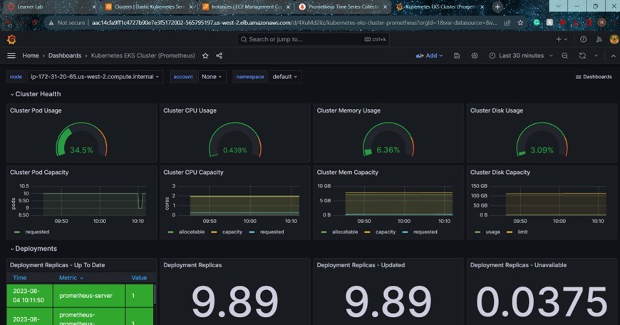
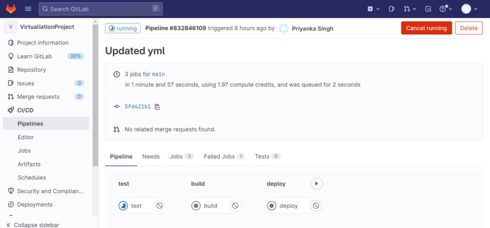

1. Simple File Manager Using AWS Services
Technical Description
The Simple File Manager solution is a user-friendly web-based file management platform.
A custom VPC with dual availability zones hosts Elastic File System (EFS) instances for distributed storage.
The web app, built using Python, HTML, and JavaScript, empowers users to upload, create, and delete files, with changes immediately synced to EFS.
CloudFront and S3 ensure global distribution of web app resources, linked via API Gateway.
AWS Cognito ensures secure authentication, while a CloudFormation template orchestrates infrastructure deployment.
This cohesive setup offers a seamless experience, combining modern technologies for efficient and secure file management via a simple web interface.
Architecture

Web Application Development
The core of the user experience was built using a combination of Python, HTML, and JavaScript.
The resulting web application enables users to perform various file operations, including uploading, creation, and deletion.
These actions are synchronized with the EFS instances.
Home Page

Login Page

2. AWS EKS High-Availability Deployment for Interdependent Applications
Problem Statement
The software package comprises two components, A and B, which are tightly coupled and cannot be run on separate servers due to performance issues.
Furthermore, each component of A and B cannot be colocated on the same server. To address these constraints, the solution aims to deploy both components on Kubernetes with three instances to ensure high availability and handle the significant workload.
Solution Approach
The project will utilize AWS EKS, leveraging a pre-existing EKS cluster with three nodes, each in a distinct availability zone.
To maintain efficient utilization of resources & adhere to the vendor's restrictions, we have containerized applications A and B.
PROMETHEUS AND GRAFANA
Prometheus

Working on LoadBalancer

Grafana

3. Automation with Terraform
A real-world challenging scenario of codifying infrastructure and provisioning it in the Azure cloud.
4. Automation with Terraform and Ansible
Technical Description
Experience streamlined infrastructure management with our project combining Ansible and Terraform.
From partitioning disks to configuring load-balanced websites.
It seamlessly manages user creation, file modifications, provisioning, and post-deployment validation, ensuring a reliable and consistent infrastructure deployment experience.
configuration validation
5. Designing Flexible CI/CD Pipeline using GitLab and Docker
Technical Description
The goal of the project is to design a pipeline that can handle application and manage the entire software development process, starting from code commit to deployment.
GitLab's built-in CI/CD pipelines and Docker's containerization technology are used to achieve this objective.
The pipeline is designed to be scalable, reliable, and efficient, streamlining the software development process.
By integrating CI/CD with GitLab and Docker, we can create, test, and deploy their applications quickly and efficiently, resulting in high-quality software delivered to users faster.
Architecture

GitLab Runner CI/CD Pipeline
